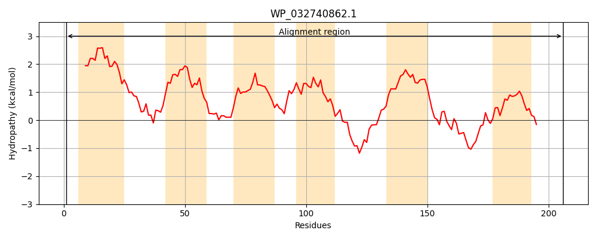
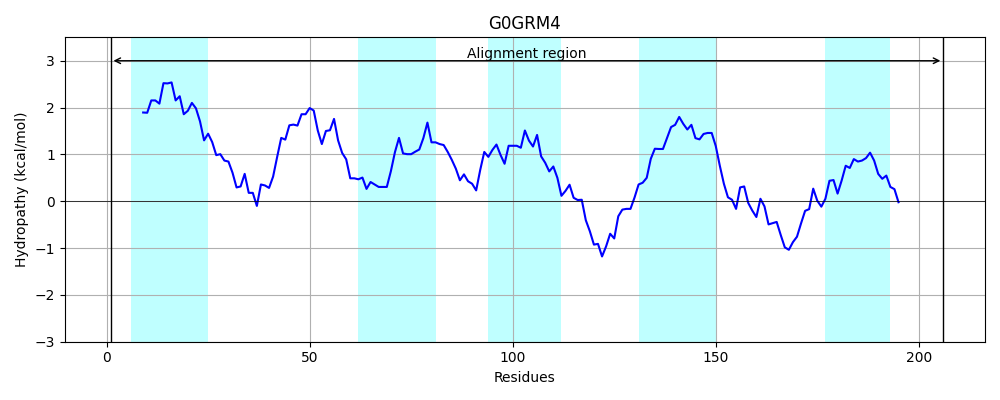
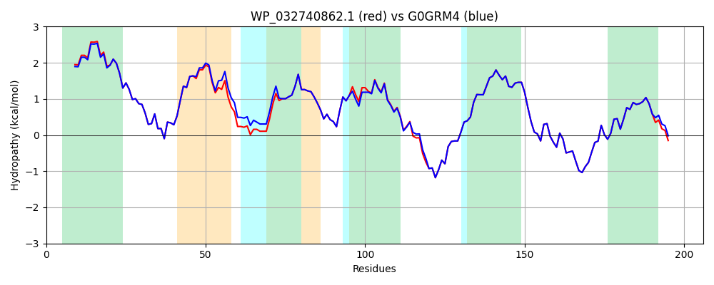

Hit Accession: G0GRM4
Hit TCID: 9.B.2.4.1
Hit Description: gnl|BL_ORD_ID|4539 gnl|TC-DB|G0GRM4|9.B.2.4.1 Putative transport protein OS=Klebsiella pneumoniae KCTC 2242 GN=KPN2242_17885 PE=4 SV=1
Mach Len: 206
e:0.000000
Query TMS Count : 6
Hit TMS Count: 5
TMS-Overlap Score: 4.200000
Predicted Substrates:None
BLAST Alignment:
Score: 1005 , Bit scores: 391 bits, E-value: 4.2e-141, Alignment length: 206, Percentage identity: 96
Query: 1 MSLLRSLLFFLGAAVAAALAVLCLWVDIRVFGNDIPEVSLTEVVQESVLAVIVLVHFLLARKYTRLRYSNILIGGFFLAMLIRELDGLFDLLSHGSWVWFALLATVGSLLAPLRHLRQTLSQLAEYTRTPYYGMMISGLLAILVFSRLFGMHGLWYAVLDENYARVVKNTVEEGSESFGYMLCLTATLGYACYFRGLARQTLSPQR 206
MSLLRSLLFF GAAVAAALAVLCLWVDIRVFGNDIPEVSLTEVVQESVLAVIVLVH LLARKY LRYSNILIGGFFLAMLIRELDGLFDLLSHGSWVWFALLAT GSLL PLRHLRQTLSQLAEYTRTPYYGMMISGLLAILVFSRLFGMHGLWYAVL+ENYARVVKNTVEEGSESFGYMLCLTATLGYACYFRGLARQ LSPQR
Sbjct: 1 MSLLRSLLFFFGAAVAAALAVLCLWVDIRVFGNDIPEVSLTEVVQESVLAVIVLVHLLLARKYAHLRYSNILIGGFFLAMLIRELDGLFDLLSHGSWVWFALLATAGSLLLPLRHLRQTLSQLAEYTRTPYYGMMISGLLAILVFSRLFGMHGLWYAVLEENYARVVKNTVEEGSESFGYMLCLTATLGYACYFRGLARQALSPQR 206 | Protein Hydropathy Plots: |
|---|
|  |  |
Pairwise Alignment-Hydropathy Plot:
|
|---|
|  |